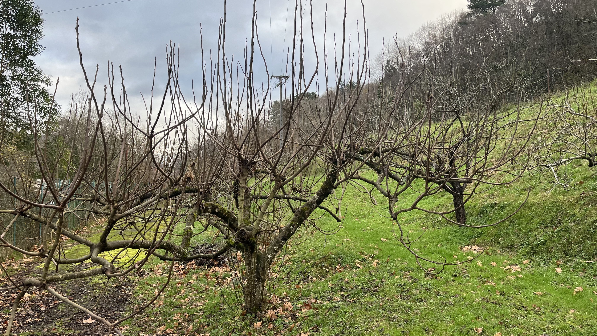

Egoera aktuala
Gure berdegunea hutsik dago, zuhaitzak lehor eta plastikoak sakabanatuta. Irudi hauek errealitatea erakusten dute udazkenean.
- Zuhaitzak eta fruitu-arbolak hilzorian daude.
- Hondakin plastikoak eta zikinkeria lurpean.
- Negutegiak eta kutxak hautseztuta.

Arauak
- Hondakinak sailkatzea: Plastikoa (irudietan bezala) kontenedoreetara eramatea derrigorrezkoa da.
- Izarriak itzaltzea: Eraikin zaharretan argiak itzali.
- Uraren xahuketa saihestu: Negutegiak konpondu eta ura ez xahutu.
Borondatezkoa
- Garbitasun kanpainak: Plastikoak kendu eta lurra garbitu, irudietan bezala.
- Landatuak landatzea: Lehorrak ordezkatu zuhaitz berri autoktonoekin.
- Ingurumen heziketa: Haurrentzat bisitak antolatu berdegunea berreskuratzeko.
Erreziklajea
- Puntugorriak erabili: Etxean sailkatu eta berdegunera ekarri.
- Ontzi birgaitua erabili: Birziklatua erosi eta plastiko berriak saihestu.
Lehenengo Pausoak
- Hondakinak biltzea: Boluntarioekin plastiko eta zurak kendu.
- Zuhaitzak egiaztatzea: Lehorrak moztu eta berriak landatu udaberrian.
- Sarbidea garbitzea: Bidea eta hesia konpondu jendea etortzeko.
Etorkizuneko Ikuspegia
Hutsik egon arren, komunitatearekin berreskuratu daiteke: parke bihurtu, ortu komunitarioa edo pasealeku.